《追色手记49》学习资料
Woodylaulau：干净日系感与通透肤色实操
视频标题 | 手残党狂喜！保姆级教程调出「干净日系感」，参数直接给，看完就能用！〡追色手记49 |
作者 | 摄影师聿铭 |
时长 | 约 7 分 32 秒 |
来源 | https://www.bilibili.com/video/BV11UbkzDEwi/ |
整理日期 | 2026-05-23 |
说明本文根据视频音频转写、画面截取与内容校对整理，保留学习所需的方法、步骤和关键截图，不包含逐字稿。
Woodylaulau 作品参考截图
以下截图用于观察 Woodie/Woodylaulau 风格中的干净日系感：整体明亮、肤色轻微偏洋红、黑色仍然扎实，绿色和蓝色带一点清爽的青感。
|
作品入口：白裙蓝天 |
清新日系样本 |
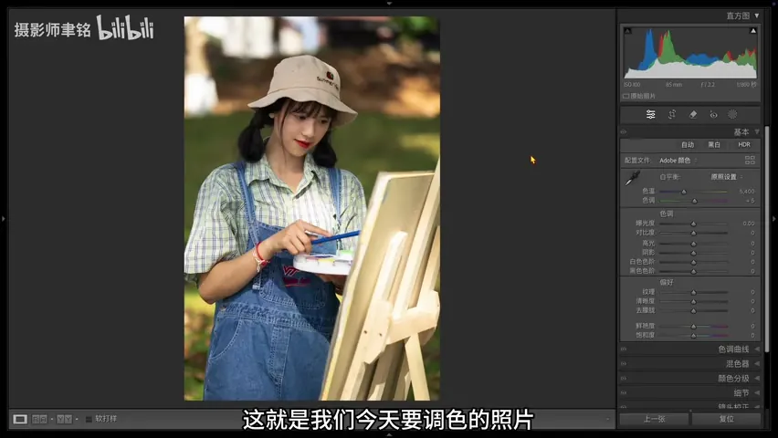 练习原图 | 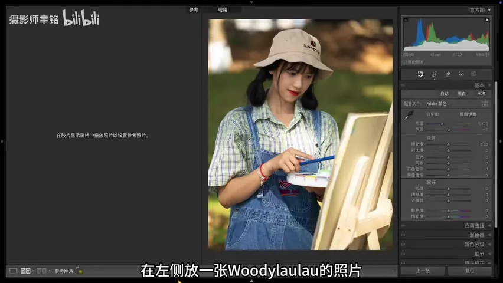 参考视图同屏 |
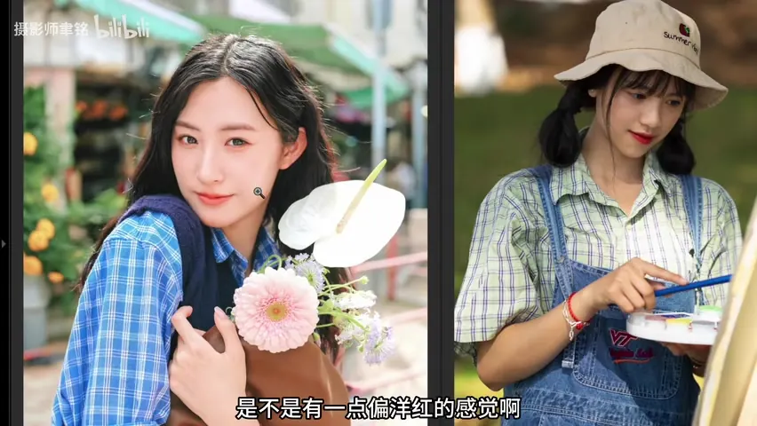 肤色偏洋红 | 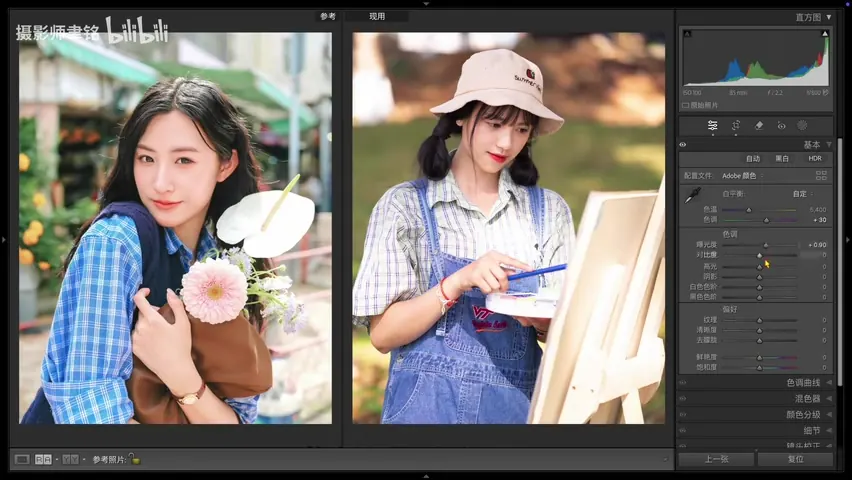 明亮基底 |
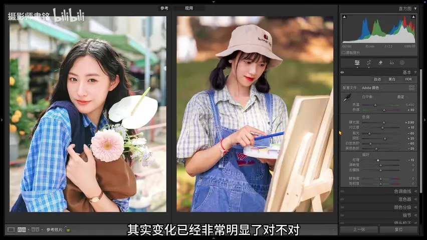 基础面板完成 | 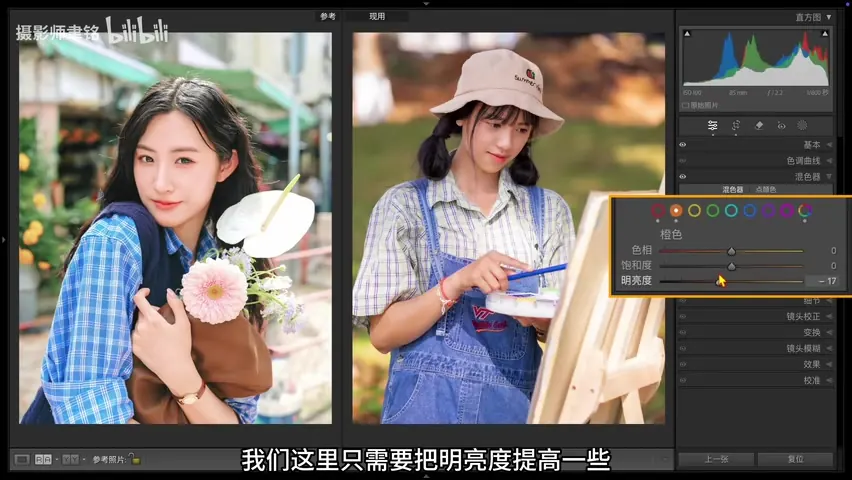 肤色亮白 |
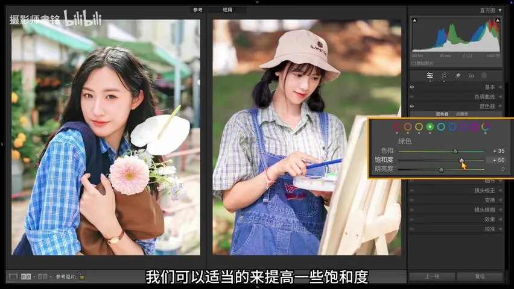 青绿色背景 | 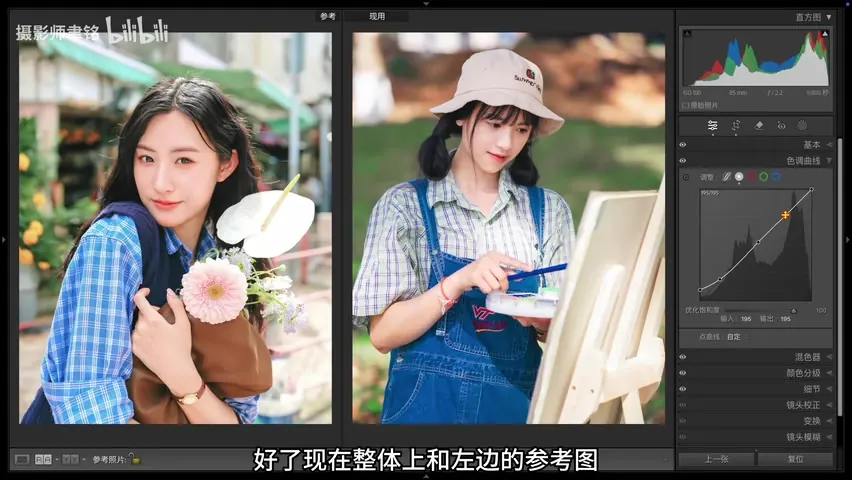 靠近参考图 |
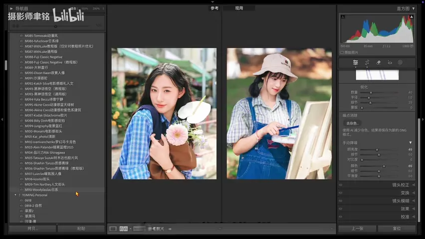 前后对比 | 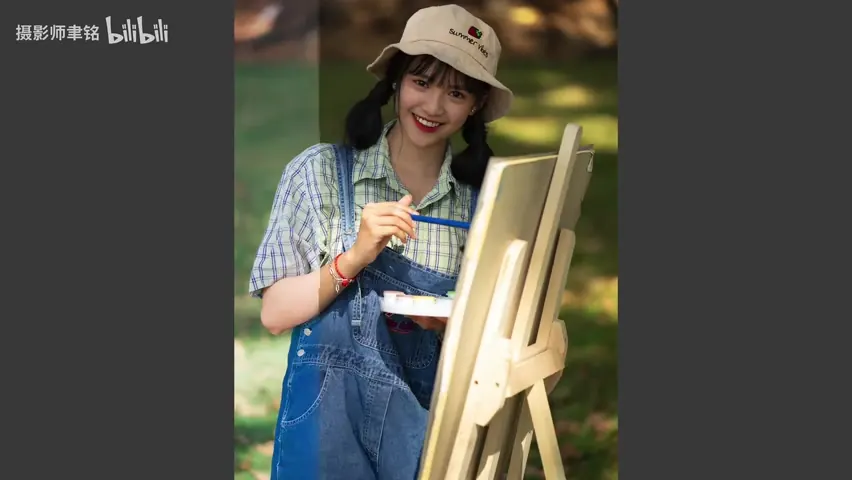 套用其他照片 |
一页速览
风格核心 | Woodylaulau 的干净日系感并不是单纯变亮，而是明亮、清爽、皮肤柔和，同时黑色仍有支撑。 |
观察重点 | 参考图肤色略偏洋红，整体偏亮，直方图靠右，但暗部黑色并不完全漂灰。 |
实操顺序 | 4:5 裁切与参考视图 -> 色调偏洋红 -> 基础面板建立明亮层次 -> 降纹理 -> HSL 修主要颜色 -> 颜色分级加淡蓝 -> 降噪 -> 曲线抬黑再压回。 |
关键提醒 | 模仿的是思路而不是参数。素材环境不同，重点是把肤色、绿色、蓝色和黑色关系调到接近参考。 |
学习目标
能用参考视图边看边调，避免只凭记忆套参数。
能识别日系清新风中“亮但不灰、柔但不糊”的影调关系。
能通过色调滑块让肤色出现轻微洋红倾向。
能用 HSL 分别处理口红、肤色、环境黄色、青绿色和蓝色衣物。
能用颜色分级、降噪和曲线完成干净通透的收尾。
风格拆解
维度 | 观察重点 | 本片结论 |
构图 | 社交平台展示比例。 | 可先裁成 4:5，方便贴近参考作品的观看方式。 |
肤色 | 参考图肤色是否偏冷、偏暖或偏洋红。 | 肤色有一点洋红感，先用色调滑块往右微调。 |
影调 | 直方图位置和黑色支撑。 | 整体偏亮、直方图靠右，但黑色仍比较实。 |
质感 | 皮肤和背景是否干净。 | 降低纹理和降噪，让画面光洁、纯净。 |
颜色 | 画面主要色彩如何统一。 | 红色压口红，橙色提肤色，黄色去黄，绿色偏青，蓝色更有质感。 |
Lightroom 实操流程
裁切与参考视图先把照片裁成 4:5；打开参考视图，把 Woodylaulau 照片放在左边，对照肤色、影调和背景颜色。
色调偏洋红观察参考图肤色有轻微洋红感，因此把色调往右推一点，让练习图的肤色接近参考。
基础影调提高曝光建立日系明亮感；轻微提高对比；高光和白色色阶压暗一点，找回衣服亮部细节；阴影提亮，让背景暗部起来。
黑色支撑黑色色阶不提亮，反而适当压暗，因为参考图的黑色比较实。这样画面不会太灰，明暗层次更清楚。
质感柔化降低纹理，减弱画面细节和皮肤纹理，形成类似磨皮的干净观感。
混色器微调红色主要控制嘴唇，往橙色微调、降饱和、提明亮；橙色主要控制肤色，只提高明亮度；黄色往绿色推并降饱和，减弱环境黄味。
绿色与蓝色绿色往青绿方向调，适当提高饱和和明亮度；蓝色往青方向微调，饱和提高，明亮度压低，让衣服更有质感。
颜色分级阴影和高光都加入少量色相约 210 的蓝色，让画面更清爽、更统一。
降噪与曲线细节面板降噪；曲线左下黑点轻抬，再把暗部和中间调收回，既有柔和暗部，又不让画面发灰。
参数逻辑速查
模块 | 调整方向 | 作用 | 风险 |
色调 | 往洋红方向推 | 让肤色靠近参考图的粉感。 | 过量会显得脸红或不自然。 |
曝光/阴影 | 提高 | 整体更亮、更日系。 | 容易变灰，需要黑色和对比支撑。 |
高光/白色 | 压低 | 保留亮部细节。 | 压太多会失去空气感。 |
黑色 | 压暗 | 让画面不漂，黑位更实。 | 过量会堵暗部。 |
纹理/降噪 | 降低纹理、做降噪 | 皮肤和画面更干净。 | 过量会糊。 |
HSL 红/橙 | 红色降饱和，橙色提亮 | 嘴唇更稳，肤色更白净。 | 红色过低会没气色。 |
HSL 黄/绿/蓝 | 黄色去黄，绿色偏青，蓝色更深 | 背景更清爽，衣物更有质感。 | 颜色要按素材微调。 |
颜色分级 | 阴影/高光少量蓝 | 统一清爽氛围。 | 蓝色太多会显脏或肤色发冷。 |
关键截图与讲解
图 01 | 00:02 | Woodie 作品引入。
学习要点先建立目标风格：干净、明亮、清新的日系观感。
图 02 | 00:08 | 清新日系风样本。
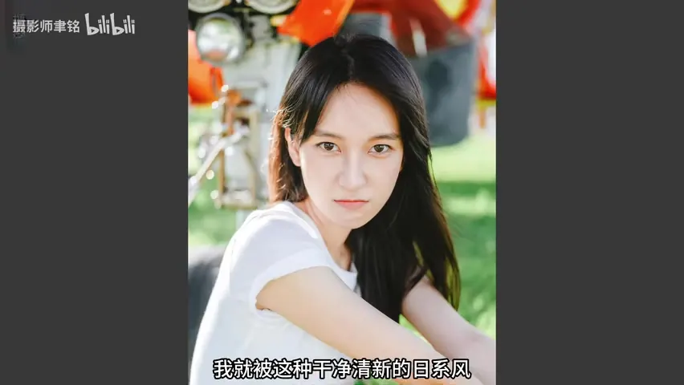
学习要点观察肤色和背景都偏轻、偏干净。
图 03 | 00:43 | 练习原图。
学习要点本期用一张 RAW 原图完整演示调色。
图 04 | 00:53 | 4:5 裁切。
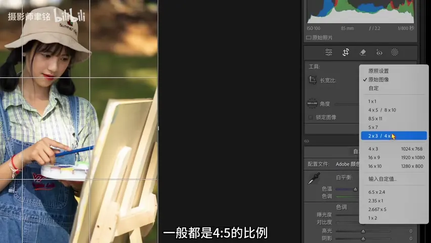
学习要点模拟社交平台常见展示比例，让画面更接近参考作品。
图 05 | 01:03 | 打开参考视图。
学习要点把参考图放在左侧，边观察边调整。
图 06 | 01:12 | 参考肤色偏洋红。
学习要点肤色不是单纯橙黄，而带一点粉/洋红倾向。
图 07 | 01:18 | 色调往洋红。
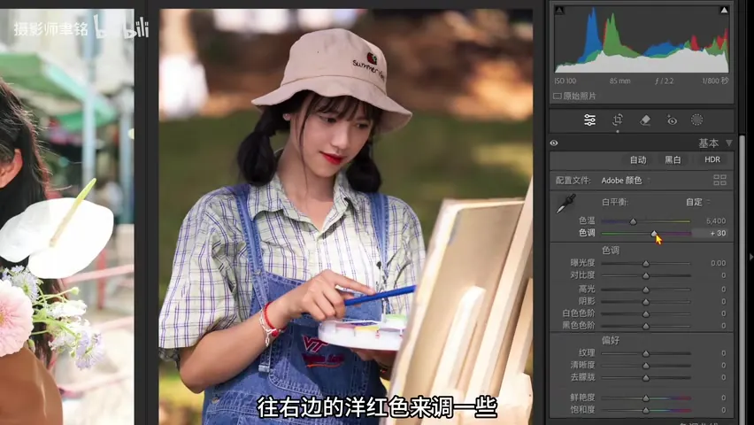
学习要点先让练习图出现接近参考的肤色倾向。
图 08 | 01:28 | 提高曝光。
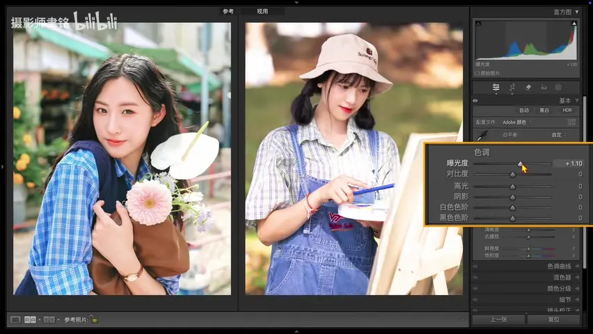
学习要点Woodie 风格偏亮，直方图也更靠右。
图 09 | 01:43 | 压高光白色。
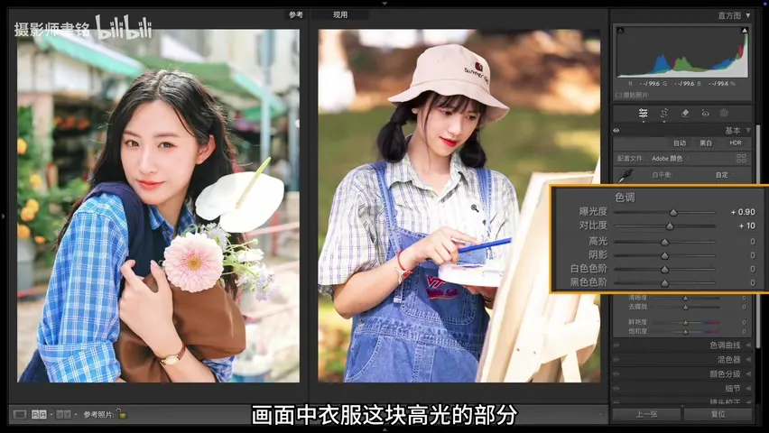
学习要点衣服亮部有过曝倾向，压回一点细节。
图 10 | 01:56 | 提阴影。
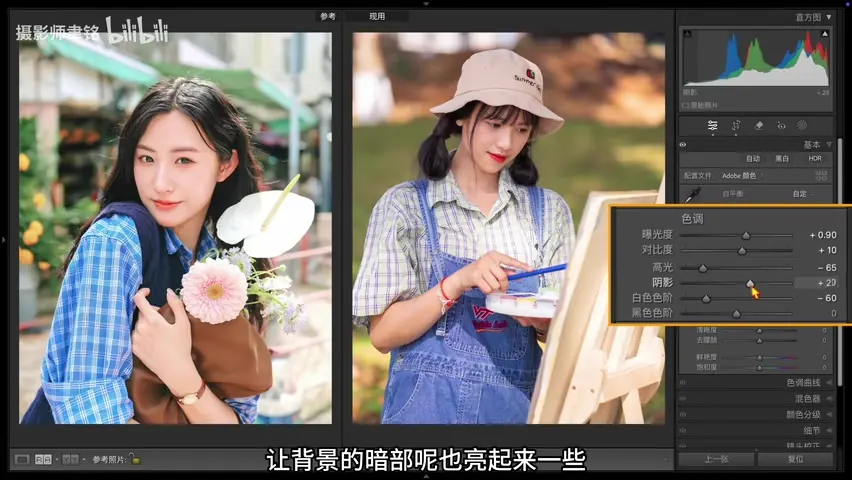
学习要点让背景暗部起来，画面更通透。
图 11 | 02:04 | 压黑色。
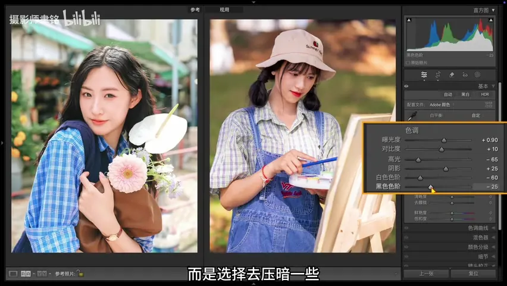
学习要点参考图黑位较实，压黑能避免画面发灰。
图 12 | 02:29 | 降低纹理。
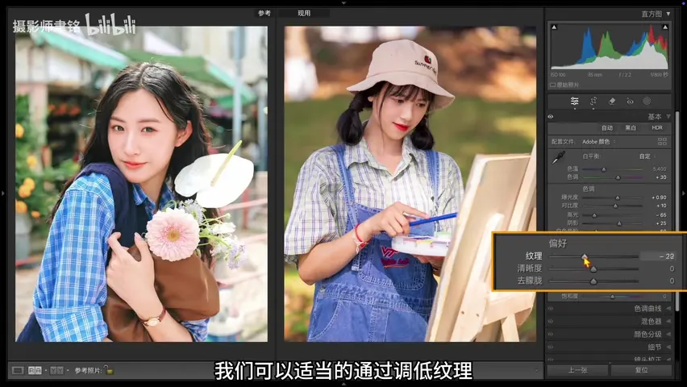
学习要点弱化皮肤和画面纹理，获得光洁感。
图 13 | 02:38 | 基础面板完成。
学习要点仅基础调整就已经明显接近日系明亮感。
图 14 | 02:49 | 红色修口红。
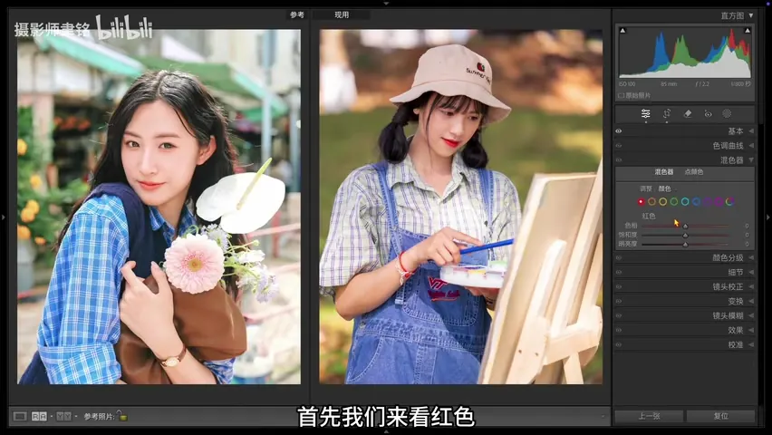
学习要点红色往橙调、降饱和、提明亮，口红更内敛。
图 15 | 03:22 | 橙色提肤色。
学习要点橙色主要管皮肤，提高明亮度让皮肤更亮白。
图 16 | 03:48 | 黄色去黄。
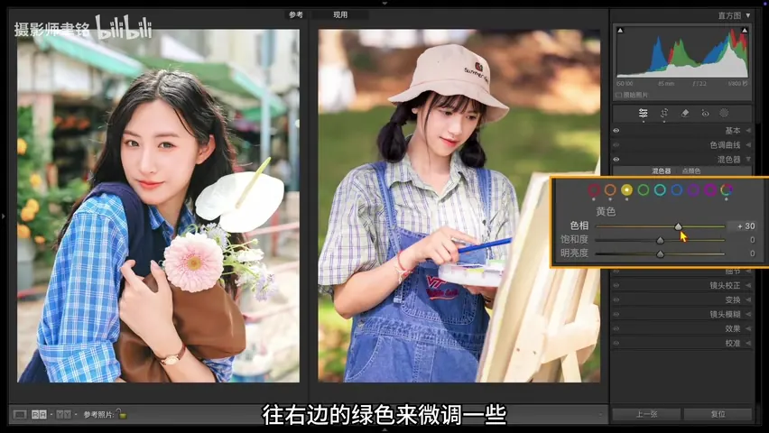
学习要点黄色往绿推并降饱和，减弱环境黄味。
图 17 | 04:12 | 绿色偏青。
学习要点参考图的绿色更接近青绿，适当提高饱和和明亮。
图 18 | 04:40 | 蓝色调衣服。
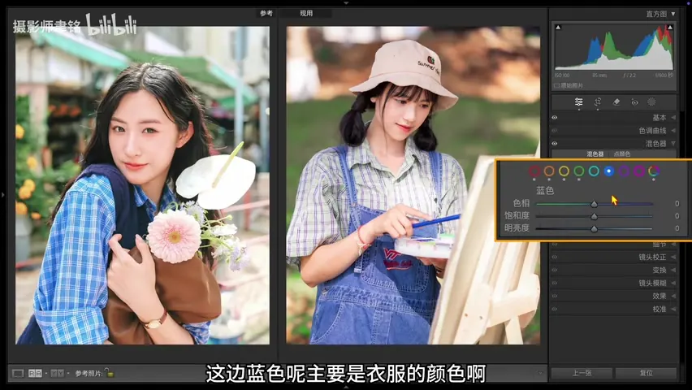
学习要点蓝色往青、饱和提高、明亮度压低，让衣服更有质感。
图 19 | 05:03 | 阴影加蓝。
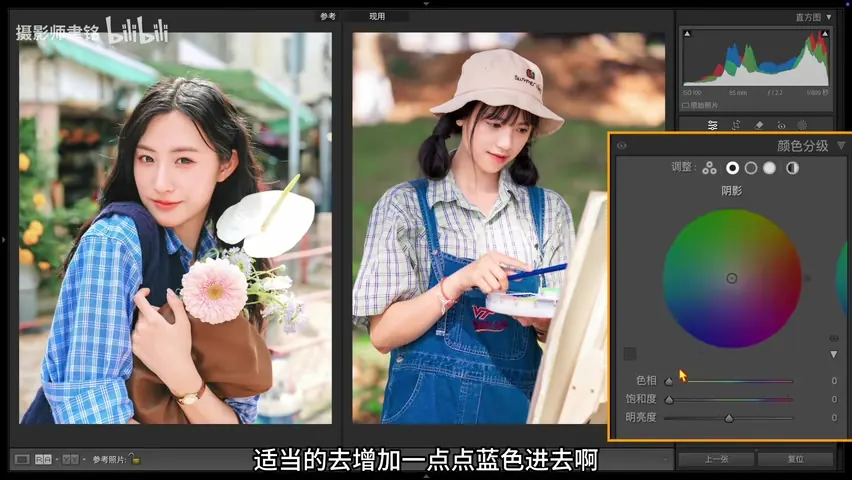
学习要点色相约 210 的淡蓝是清爽氛围的常用方向。
图 20 | 05:18 | 高光加蓝。
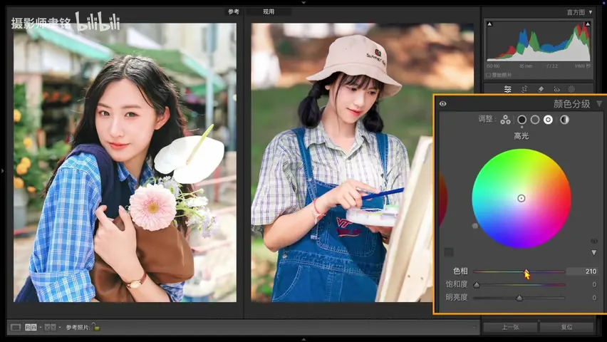
学习要点高光也少量加蓝，让冷净感更统一。
图 21 | 05:24 | 细节降噪。
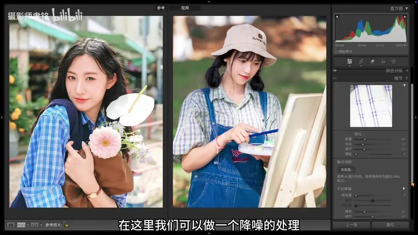
学习要点干净日系感需要少噪点、少颗粒。
图 22 | 05:39 | 曲线抬黑。
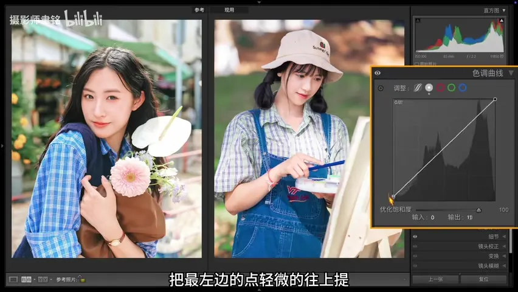
学习要点黑点轻抬，避免暗部死黑。
图 23 | 05:47 | 暗部收回。
学习要点抬黑后压回暗部，让画面不灰。
图 24 | 05:58 | 接近参考图。
学习要点整体已经和左侧参考图方向接近。
图 25 | 06:48 | 前后对比。
学习要点原片被推向更干净、更亮、更柔和的日系效果。
图 26 | 07:04 | 套用其他照片。
学习要点同一套参数可作为起点，但仍需要按素材微调。
练习任务
准备一张户外自然光人像，先裁成 4:5，并找一张 Woodylaulau 方向的参考图同屏观察。
先调色调和基础影调肤色微偏洋红，整体提亮，高光白色压回，阴影提亮，黑色压实。
降低纹理后检查脸部、头发和衣服边缘，确认没有糊成一片。
按红、橙、黄、绿、蓝的顺序做 HSL，不要一上来乱动所有颜色。
颜色分级只加少量淡蓝，最后用曲线抬黑并压回暗部。
保存一张前后对比，并写下你最终改变最大的三个参数。
复盘清单
检查项 | 通过标准 |
亮度 | 整体偏亮，直方图靠右，但亮部细节没有完全丢失。 |
黑位 | 黑色有支撑，不是全图漂灰。 |
肤色 | 轻微偏洋红且更白净，不蜡黄、不死白。 |
背景 | 黄色被压下，绿色更偏青绿。 |
衣服 | 蓝色更稳、更有质感。 |
质感 | 皮肤干净柔和，头发和五官仍清楚。 |
相似度 | 和参考图方向接近，但没有强行追求一模一样。 |
时间轴速查
时间 | 模块 | 重点 |
00:01-00:40 | 风格引入 | Woodylaulau 干净清新的日系风格。 |
00:41-01:06 | 准备 | 练习原图、4:5 裁切、打开参考视图。 |
01:08-02:38 | 基础面板 | 色调偏洋红，提曝光，压高光白色，提阴影，压黑色，降纹理。 |
02:48-04:56 | 混色器 | 红色口红、橙色肤色、黄色环境、绿色背景、蓝色衣服。 |
05:00-05:24 | 颜色分级 | 阴影和高光都加入少量 210 左右的蓝色。 |
05:24-05:58 | 降噪与曲线 | 降噪、抬黑点、暗部和中间调收回。 |
06:08-07:10 | 总结与套用 | 总结参数逻辑，并把预设套到其他照片上看效果。 |
全部图片
本页共保留 28 张来自 Word 的图片。上方正文中已按文档顺序展示，这里作为总览索引。